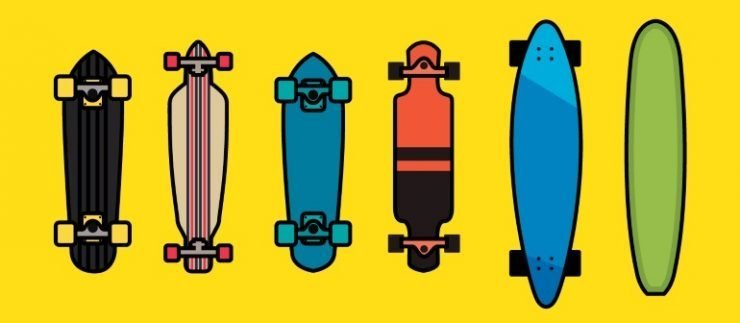
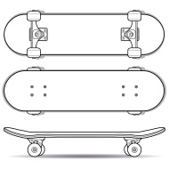
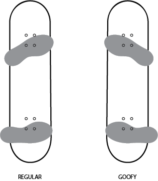

So... you wanna learn to skateboard. But where do you start? Entering the skating world can be very intimidating. First things first, choosing a board. If you wanna cruise the streets, stay on all four wheels and go for long rides with your friends, I would recommend a longboard, or a cruiser board. These boards often have bigger trucks which provide more stability. They also have bigger wheels that create a smooth riding experience. These boards will get you from point A to point B with the smoothest riding experience. Longboards are very long and bulky whereas cruisers come in all different sizes.
If you're interested in flipping your board, doing tricks and heading to the local skateparks I would recommend going to your local skateshop and buying a skateboard. Skateboards have a nose and a tail which are curved up and allow you to make quick turns and intricate trick maneuvers with your board. Skateboards often have smaller wheels so that the board can flip, spin and do tricks. However, smaller wheels also lead to a rough ride. The average board size is 8.25in wide. But board size varies depending on your shoe size and personal preference.
Finally, after choosing your board you'll want to ride it! When first learning to ride you'll want to figure out your stance. The two skating stances are goofy and regular. Regular stance means that your left foot is in front and always stays on the board while your right foot pushes. Goofy is the opposite. Goofy stance means that your right foot is in front while your left foot does the pushing. Stances are also determined by personal preference. Usually I tell people to pretend to throw a football. The foot that you step forward with should be the foot you place at the front of the board. If you step forward with your left foot, you're regular. If you step forward with your right foot, you're goofy.
